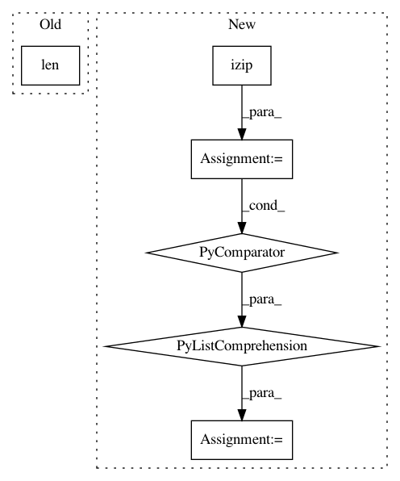

1edd1496383e7ae0374ec5dd8b455d58077e1d62,cnvlib/_merge.py,,_merge_overlapping,#Any#Any#,41
Before Change
overlap_sizes = table.end.cummax().values[:-1] - table.start.values[1:]
non_overlapping = np.r_[False, (overlap_sizes <= 0)]
// Squash rows within each non-overlapping group
return (table.groupby(non_overlapping * np.arange(len(non_overlapping)),
as_index=False, group_keys=False, sort=False)
.apply(_squash_rows, combiners))
After Change
// advantage of the grouping and sorting already done, and don"t repeat
// pandas" traversal and inferences.
// ENH: Find & use a lower-level, 1-pass pandas function
keyed_groups = itertools.izip(_nonoverlapping_groups(table),
table.itertuples(index=False))
merged_rows = [_squash_tuples(row_group, combiners)
for _key, row_group in itertools.groupby(keyed_groups,
lambda x: x[0])]
return pd.DataFrame.from_records(merged_rows, columns=merged_rows[0]._fields)
def _nonoverlapping_groups(table):
In pattern: SUPERPATTERN
Frequency: 3
Non-data size: 6
Instances
Project Name: etal/cnvkit
Commit Name: 1edd1496383e7ae0374ec5dd8b455d58077e1d62
Time: 2016-10-30
Author: eric.talevich@gmail.com
File Name: cnvlib/_merge.py
Class Name:
Method Name: _merge_overlapping
Project Name: dask/dask-image
Commit Name: aab843410171a11dfd721b1d9cc980bee4420427
Time: 2018-09-02
Author: jakirkham@gmail.com
File Name: dask_image/ndfourier/_utils.py
Class Name:
Method Name: _get_freq_grid
Project Name: grrrr/nsgt
Commit Name: 5077a3127b9c3c632a3a35db6f122d7b64dfaa20
Time: 2011-03-28
Author: gr@grrrr.org
File Name: src/nsdual.py
Class Name:
Method Name: nsdual